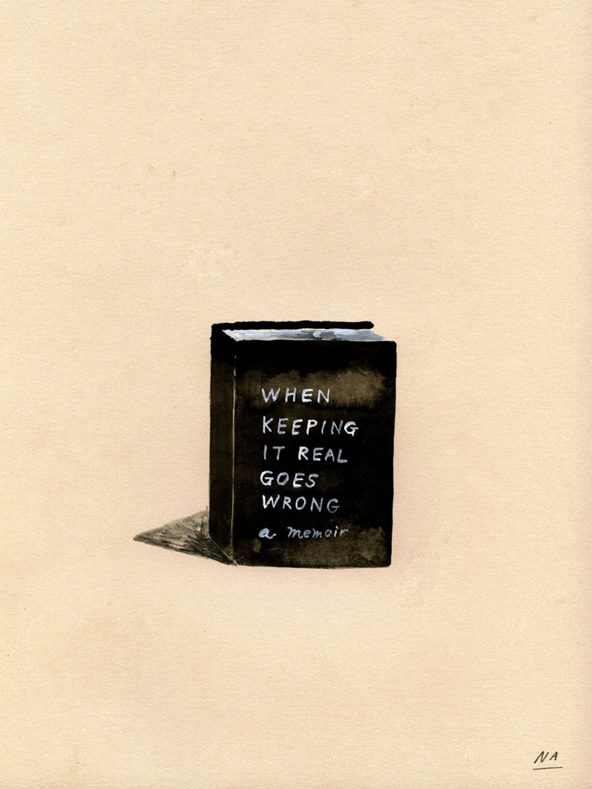

Na Kim Recommends :
Medicare for All.
Laura Van den Berg's I Hold a Wolf by the Ears.
Bryan Washington's writing on food.
Listen to your body.
The Hours sountrack
Na Kim is a NYC illustrator and art director at the publishing house Farrar, Straus and Giroux. Her book covers have been selected as one of The New York Times’ best book covers of the year for the past four consecutive years.
Medicare for All.
Laura Van den Berg's I Hold a Wolf by the Ears.
Bryan Washington's writing on food.
Listen to your body.
The Hours sountrack